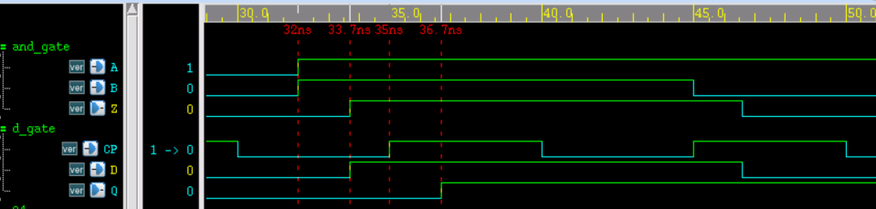
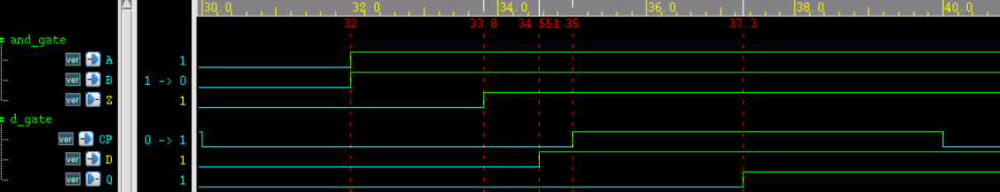
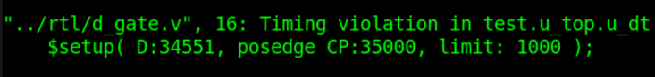

Keywords: delay back-annotation, SDF
Delay back-annotation is the process in which the designer, based on cell library process, gate-level netlist, and capacitance and resistance information in the layout, uses digital design tools to annotate delay information into the gate-level netlist. Using the back-annotated netlist, accurate timing simulation can be performed, making the simulation closer to an actual working digital circuit.
Delay back-annotation process
The simulations in the previous tutorials are basically functional simulations. Whether doing IC design or FPGA development, timing simulation is indispensable. The section "1.4 Verilog Design Methodology" in the Verilog Tutorial also describes the complete digital design development flow.
In the following, we explain how delay back-annotation is used in this flow, as a review and consolidation.
- (1) Use a hardware description language to complete the RTL-level description and perform functional simulation.
- (2) Apply certain timing constraints to signals such as clock, reset, and output ports, including settings for clock frequency, timing checks, delays, etc., and use them for logic synthesis.
- (3) The synthesized gate-level netlist contains various roughly estimated delay information. At this point, you can remove delay information such as hold, recovery, removal, and interconnect, perform preliminary timing simulation and static timing analysis (STA), and initially verify whether timing such as setup meets the timing requirements. Many companies or individuals also skip the simulation at this step.
- (4) Perform place and route on the gate-level netlist to convert it into a layout-level netlist. Based on information such as component geometry and manufacturing process, the capacitance and resistance information in the layout circuit can be extracted, and then the delay values in the layout can be calculated from this information.
- (5) Back-annotate the delay information from the post-place-and-route layout into the layout-level netlist, so that the delay values in the netlist can be accurately modified. At this point, perform timing simulation and STA again to verify whether the timing is satisfied.
- (6) If all verifications pass, then downloading, implementation, or production can proceed. If there are timing violations, first check the timing constraint settings, such as whether the delay parameters, clock frequency, signal relationships, etc., are set correctly, then re-do place and route to verify whether the violations can be eliminated. If none of the above measures can eliminate the violations, it is necessary to go back to the initial design and optimize the RTL description.
The schematic diagram of this process is as follows. The yellow-highlighted part indicates the operational instructions that can be added in the digital design flow.

SDF file
SDF (Standard Delay Format) is a standard delay format file commonly used for delay back-annotation. This file contains all the parameters for simulation such as IOPATH, INTERCONNECT, TIMING CHECK, and other delay and timing constraint parameters. Below is a brief introduction to the SDF file.
File format
The SDF file is declared with the keyword DELAYFILE and contains keyword information such as DESIGN, DATE, etc.
The delay time and timing constraint parameters are all described within CELL.
An SDF file is composed of file declaration information and many different CELLs, with the format as follows.
(DESIGN "top")
(DATE "Love Sep 7 11:11:11 2017")
......
(TIMESCALE 1ns)
(CELL
......
)
(CELL
......
)
......
)
Delay types
The delay types in the SDF file include cell delay and wire delay. Cell delay refers to the internal delay of logic gate cell devices, while wire delay refers to the delay of interconnections between devices through wires.
The cell delay description is as follows. It defines the rise delay and fall delay between the input ports (A/B) and output port (Z) of module "and_gate", and specifies the minimum and maximum values.
(CELLTYPE "and_gate") //module name
(INSTANCE u_and) //instance name; if multi-level access is needed, specify the access hierarchy
(DELAY
(ABSOLUTE
(IOPATH A Z (1.5::1.8) (1.3::1.7)) //rise delay: minimum 1.5, maximum 1.8
(IOPATH B Z (1.5::1.8) (1.3::1.7)) //fall delay: minimum 1.3, maximum 1.7
)
)
)
The wire delay description is as follows. It defines the rise delay and fall delay from the u_and output to the u_dt input in module "top", and specifies the minimum and maximum values.
Generally, RTL-level simulation or the synthesized gate-level netlist can ignore wire delay, because the backend still needs to redo place and route. The netlist after place and route is close to the real circuit, so wire delay needs to be considered at this point.
(CELLTYPE "top") //module name
(INSTANCE) //if it is the top-level design module, the instance name can be ignored
(DELAY
(ABSOLUTE
(INTERCONNECT u_and.Z u_dt.D (0.500::0.751) (0.400::0.551))
//(INTERCONNECT u_and/Z u_dt/D (0.500::0.751) (0.400::0.551))
//hierarchy access symbol: some compilers support ".", some support "/"; note this here
)
)
)
Conditional delays and timing checks
In CELL, the keyword COND can also be used to specify conditional delays.
At the same time, timing checks can also be performed within CELL.
An example of delay specification and timing check for a D flip-flop is as follows.
(CELLTYPE "d_gate")
(INSTANCE u_dt)
(DELAY
(ABSOLUTE
// when D=1, rise delay is 1.3-2.3, fall delay is 1.5-2.2
(COND D==1'b1 (IOPATH CP Q (1.3::2.3) (1.5::2.2)))
// when D=0, rise delay is 1.2-2.1, fall delay is 1.4-2.0
// here it is just to illustrate the usage of COND; the fall delay parameter cannot be used when D=1
// the rise delay parameter cannot be used when D=0
(COND D==1'b0 (IOPATH CP Q (1.2::2.1) (1.4::2.0)))
)
)
(TIMINGCHECK
(SETUP D (posedge CP) (0.8::1))
//setup check: if the D-CP time is less than 0.8 or 1, a violation is printed
)
)
Usage
Verilog provides the system function $sdf_annotate to call an SDF file to complete the delay back-annotation process.
The usage format is as follows:
$sdf_annotate ('sdf_file'[, module_instance] [,'sdf_configfile'][,'sdf_logfile'][,'mtm_spec'] [,'scale_factors'][,'scale_type']);
Here, sdf_file must be specified; the remaining parameters are optional.
Only the first few commonly used parameters are explained here.
- sdf_file: the SDF file name, including path information.
- module_instance: the instantiated design module name, generally the digital design module name instantiated in the testbench; be careful to keep the hierarchy consistent with the declarations in the SDF file content.
- log_file: the log about SDF during compilation, for easy reference.
- mtm_spec: specifies the delay type to use. Options include MAXIMUM, MINIMUM, and TYPICAL, which mean using the maximum, minimum, or typical values annotated in the SDF file, respectively. Of course, the SDF file example above does not give typical values.
Simulation using specify
The following uses specify to perform a simple timing simulation, so as to compare with timing simulation using an SDF file.
An AND gate logic description with delays specified using specify is as follows:
output Z,
input A, B);
assign Z = A & B ;
specify
specparam t_rise = 1.3:1.5:1.7 ;
specparam t_fall = 1.1:1.3:1.6 ;
(A, B *> Z) = (t_rise, t_fall) ;
endspecify
endmodule
A D flip-flop description with delays specified using specify is as follows:
Example
output Q ,
input D, CP);
reg Q_r ;
always @(posedge CP)
Q_r <= D ;
assign Q = Q_r ;
specify
if (D == 1'b1)
(posedge CP => (Q +: D)) = (1.3:1.5:1.7, 1.1:1.4:1.9) ;
if (D == 1'b0)
(posedge CP => (Q +: D)) = (1.2:1.4:1.6, 1.0:1.3:1.8) ;
$setup(D, posedge CP, 1);
endspecify
endmodule
The top-level module description is as follows. Its main function is to input the output of the AND logic into a D flip-flop for latching.
Example
output and_out,
input in1, in2, clk);
wire res_tmp ;
and_gate u_and(res_tmp, in1, in2);
d_gate u_dt(and_out, res_tmp, clk);
endmodule
The testbench description is as follows. During simulation, "+maxdelays" is set to use the maximum delay values.
Example
module test ;
wire and_out ;
reg in1, in2 ;
reg clk ;
initial begin
clk = 0 ;
forever begin
#(10/2) clk = ~clk ;
end
end
initial begin
in1 = 0 ; in2 = 0 ;
# 32 ;
in1 = 1 ; in2 = 1 ;
# 13 ;
in1 = 1 ; in2 = 0 ;
end
top u_top(
.and_out (and_out),
.in1 (in1),
.in2 (in2),
.clk (clk));
initial begin
forever begin
#100;
if ($time >= 1000) $finish ;
end
end
endmodule // test
The simulation timing is shown below. From the figure, we can see:
- (1) The rise delay from the AND gate input A/B to output Z is 33.7-32=1.7ns;
- (2) The interconnect delay from the AND gate output Z to the flip-flop input D is 0;
- (3) The time difference from the flip-flop D terminal to the CP terminal is 35-33.7=1.3ns, which is greater than the 1ns set in the setup check, so the timing meets the requirements and there is no violation.
- (4) The rise delay from the flip-flop CP terminal to the output Q is 36.7-35=1.7ns;
In summary, the simulation results conform to the design parameters.

Simulation using SDF
Keep the parameters involved in the SDF file example unchanged, integrate multiple CELL descriptions into a complete SDF file named "simple_test.sdf".
Add the following statements to the testbench to back-annotate the delay information from the SDF file into the designed module top, and re-run the timing simulation.
$sdf_annotate("../rtl/simple_test.sdf", u_top, , "sdf.log", "MAXIMUM", ,);
end
The simulation timing and log print information are as follows. From the figure, we can see:
- (1) The rise delay from the AND gate input A/B to output Z is 33.8-32=1.8ns;
- (2) The interconnect delay from the AND gate output Z to the flip-flop input D is 34.551-33.8=0.751ns, no longer 0.
- (3) The time difference from the flip-flop D terminal to the CP terminal is 35-34.551=0.449ns, which is less than the 1ns set during the setup check. Therefore, the timing does not meet the requirements, and a violation message will be printed.
- (4) The rising delay from the flip-flop CP terminal to the output terminal Q is 37.3-35=2.3ns.
In summary, the simulation results conform to the design parameters, but there is a timing violation. The main reason is that the data at the AND gate input and the flip-flop clock are asynchronous and unrelated. To solve such asynchronous problems, please refer to the next chapter, "Chapter 4: Synchronous and Asynchronous".


It should be noted that:
Compared with specify block statements, SDF files can also specify wire delays between modules.
Generally speaking, using SDF files to specify layout-level netlist timing information is the closest to the actual digital circuit. Compared with RTL or synthesized gate-level netlists, the timing of this version is the worst.
When an SDF file specifies intra-module path delays, the specify block of the original module must be retained, and the conditions, types, etc., of the delays specified in the specify block and the SDF file must be consistent, although the delay values can be different. For example, specify the delay unconditionally in the specify block:
(A => Z) = (1.3, 1.7) ;
Specify a conditional delay in the SDF file:
(COND A==1'b1&&B==1'b1 (IOPATH A Z (1.5::1.8) (1.3::1.7)))
Then an SDF Warning of "IOPATH from A to Z is not found." will be reported during the compilation phase. The delay set by the SDF file is invalid. Here, the SDF file should also use the unconditional method to specify path delays.
This time, the SDF file was manually written only to introduce the SDF file and its usage. In reality, SDF files are generated by designers with the help of IC design tools (such as PrimeTime), so there is no need to worry too much about the previous note; just pay attention during debugging. Generally, the gate-level netlist in digital design is huge, so writing SDF files manually is also impractical.